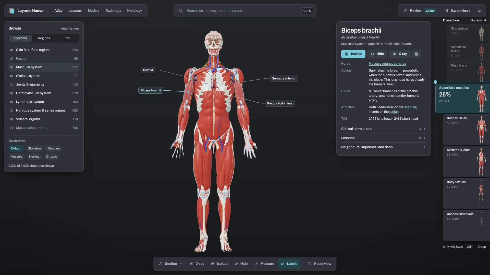
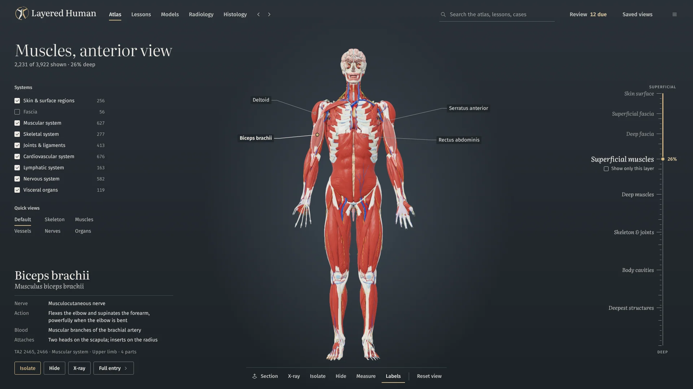
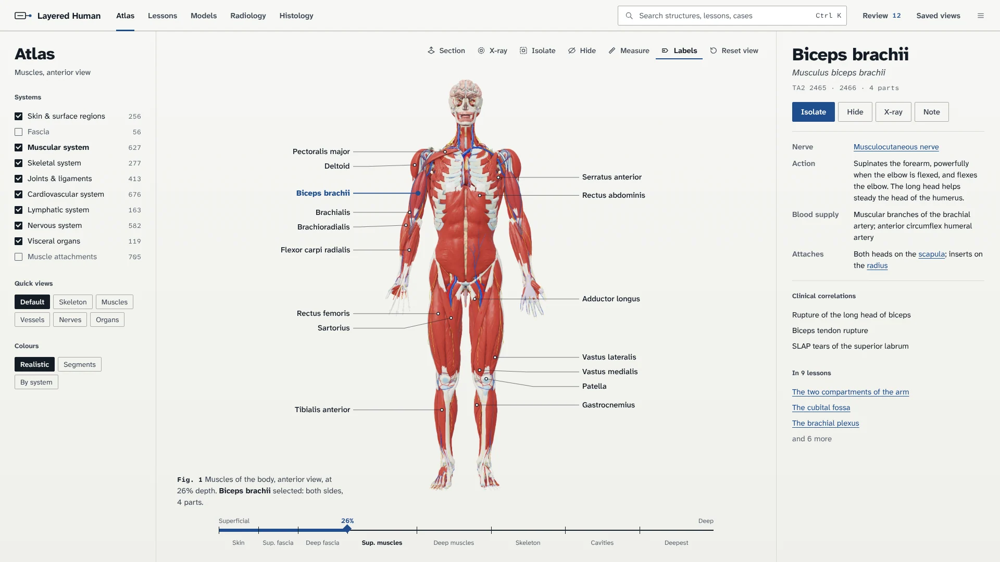

Three directions for Layered Human
One design for the desktop app and for layeredhuman.com, worked out three ways. All three keep today's idea: a quiet stage and simple colours, so the body is always the brightest thing on screen. They differ in type, in how they label the body and in how the website tells the story.
Every figure on this page is a real render from the app itself, placed into the new layouts. Pick a screen and a colour scheme in each direction to see it, or open the websites, which work in a browser.
- 3
- directions
- 21
- colour schemes
- 9
- app screens each
- 3
- working websites
- 234
- app renders
Side by side
The same screen in each direction's default scheme. Choose a screen to compare; select a picture to go to that direction.

Film leaves over a quiet board, with the layers on a rail.

The body on display: a painted wall, a pool of light, a wall label.

The screen as an atlas plate: paper, ink and labels in the margins.
Overlay
Film leaves over a quiet board.
The interface is a set of milky film leaves floating over a dark, flat stage, like acetate overlays on an atlas plate. The leaves sit at the edges and the body stays in the middle. The idea people will remember is the layer rail: the dissection slider turned into the right-hand edge of the app, one tab per layer of the body.

In the app
- The layer rail. Eight tabs, one per depth band, each with a thumbnail of the body at that depth. Peeled layers step back; the current tab reads out the exact depth.
- One selection leaf. Name and Latin name, then Isolate, Hide and X-ray, then nerve, action, blood supply and attachments, with clinical notes and lessons one step away.
- Tags and one dock. Small labels with leader lines, and the same dock (Section, X-ray, Isolate, Hide, Measure, Labels) in every 3D view.
- Type: Archivo, a variable grotesque, narrowed for labels.
On the website
Peel by scrolling. The body dissects itself as you scroll, beside the app's own layer rail. Then sections, organ to cell, films beside the model, lessons, practice and the download.

Trade-offs
The closest to today's app: dark graphite by default, the cyan selection students already know, and floating bars over the 3D view, so it is the smallest change to build.
It is also the most familiar look of the three. Floating panels over a dark viewport are common in 3D tools, so the rail has to carry the identity.
Specimen
The body on display.
An anatomy museum. The stage is a painted wall with a soft pool of light behind the body, titles are lettered on the wall in a serif, and whatever you select gets a small light wall label, like the card beside a specimen in a case. Everything else steps back into the wall.

In the app
- The wall label. The selection's title, Latin name, nerve, action, blood supply and attachments, and an accession line with its TA2 IDs, on one light card.
- A pool of light. A soft spotlight behind the model in every 3D view, instead of a flat backdrop.
- A dissection gauge. A vertical scale with the eight stops; labels are lettered straight onto the wall with fine leaders.
- Type: Literata for titles and reading, Fira Sans for the interface.
On the website
Rooms you walk through. Each specimen sits in its own pool of light, which brightens as it comes into view, with a wall label beside it. The download desk is the last room.

Trade-offs
The most atmospheric and the most distinctive of the three; no other anatomy app looks like a museum. The wall label is a strong selection component.
The mood can tip into slow or precious, so copy has to stay short. The spotlight needs a small change to the app's background shader. Dark walls only.
Plate
The screen as an atlas plate.
Paper and ink, hairline rules, no shadows. The figure is labelled in two clean margin columns, as in a printed atlas; the selected structure is set as the plate's key; depth reads off a rule like a scale bar; and every view has a figure number and a caption. The design is the way an atlas teaches.

In the app
- Labels in the margins. Two columns, sorted by height so they never overlap, each joined to its structure by a leader line.
- The key. The selection's nerve, action, blood supply and attachments set like an atlas legend, with clinical notes and the lessons it appears in.
- A depth rule. The eight dissection stops on a horizontal scale, plus figure numbers and captions on every view.
- Type: Atkinson Hyperlegible Next and Mono, drawn for legibility.
On the website
Labels that lead. The first screen is Plate 1: each label around the figure names a structure and the feature it leads to, and selecting it scrolls to that plate.

Trade-offs
The most legible and the most purposeful: labels, key and captions are the teaching method, and they carry from the app to the website with no decoration.
Light paper by default is the biggest change from today's dark stage; Night plate and Slate night keep the same design dark. Being closest to a printed atlas, it depends on precise typography.
All 21 colour schemes
The atlas screen in every scheme. Each direction has its own set, tuned to its type and surfaces. The strip under each picture shows the stage, surface, text, accent and selection colours. Select a scheme to open it in its direction above.
Overlay
5 dark · 3 lightSpecimen
6 darkPlate
5 light · 2 darkMy pick: Plate, with Night plate for long evenings
Plate is the one where the design is the teaching method. Margin labels, the key and figure captions are how an atlas teaches, and they carry from the app to the website with nothing added for decoration. It is the most legible, its website is the strongest of the three, and Bristol and Night plate give you light and dark of the same design.
Overlay is the runner-up, and the right choice if you want the app to stay dark by default and change the least. Its layer rail is the best single new idea here, and it could move into Plate as the depth rule's big sibling.
Specimen has the most character. Choose it if you want Layered Human to feel like nothing else in anatomy software, and accept a slower, quieter mood.
To decide, tell me a direction and one or two schemes, for example "Plate: Bristol and Night plate". Next I would write the design system (tokens, type, components) and then build it into the Qt theme screen by screen.
How these were made
So you know what is real and what is still a picture.
Real renders
The anatomy is the app's own output. I ran the current build headless and rendered each figure on black and on white to recover exact transparency, once for every selection colour. Labels sit on points read from the renderer's picking buffer, so each leader line ends on the structure it names.
What is a mockup
The app screens are HTML and CSS at 1920 × 1080, not Qt. They show layout, type and colour, and nothing in them is clickable. Atlas screens are rendered at 2× in every scheme, and every screen at 2× in each default scheme; the rest are 1×.
The websites
Each is one working page with a scheme switcher, built from a written brief and checked at desktop and phone widths. Download links point at the current GitHub release files. Copy follows the README's facts.
Type
Archivo, Literata, Fira Sans and Atkinson Hyperlegible Next and Mono, all under the SIL Open Font License, bundled with the pages so the app can ship them too. This page is set in Schibsted Grotesk.
Images
Chest radiographs: Mikael Häggström (CC0) and Sara Nabih (CC BY-SA 4.0). Micrographs: Echinaceapallida (CC BY-SA 4.0). All via Wikimedia Commons. Anatomy: Z-Anatomy and BodyParts3D, as in the app.
Files
Everything is in the repository under docs/design/2026-10-14-layered-human/: mockups in
app/, websites in site/, colour schemes in system/, renders in renders/, the
review of today's app and the brand brief in research/, and the tools that rebuild it all in
tools/.